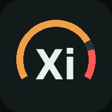

Mollet Xi 書き込みページ
ロガーの ESP32 に、ブラウザからファームを書き込みます。Arduino IDE はいりません。
CATロガー 1.1.0
金ロガー・銀ロガー共通。子基板（パルサー入力）をつなぐと、データ盗む君の計測もします。銀ロガーのままでも、そのまま使えます。
パソコンで書き込む（最初の1回）
- パソコンの Chrome か Edge でこのページを開く（スマホからはできません）
- ロガーのマキタを外す。ESP32 とパソコンを USB ケーブルでつなぐ（充電専用のケーブルはだめ）
- 下の緑のボタンを押す → 出てきた一覧から USB Serial や CP210x・CH340 を選んで「接続」
- 英語の画面が出たら Install Mollet Xi CATロガー → Install を押す
- 2分くらい待つ（このページを開いたままで）。Installation complete! が出たら Next → 右上の × で閉じて、USB を抜く
- アプリの「設定」→「ロガー」で、「ロガーに送る」と「IMUの取り付け校正」をやり直す（書き込むと、ロガーに入っていた設定が消えるので）
書き込みの準備中…
書き込みの部品が読み込めませんでした。ネットにつながっているか見て、ページを読み込み直してください。
このブラウザでは書き込めません。パソコンの Chrome か Edge でこのページを開いてください。
このページは https で開いてください。
一覧に何も出ない時：USB のドライバを入れる。ESP32 の USB の横の黒い小さいチップに書いてある方。
CH340 → WCH のページ、
CP2102 → Silicon Labs のページ。
入れたら USB を差し直す。
途中で止まる時：ESP32 の BOOT ボタンを押したまま、もう一度。
途中で止まる時：ESP32 の BOOT ボタンを押したまま、もう一度。
スマホで更新する（2回目から・パソコンなし）
- ネットがある所で、下の「ファームをダウンロード」を押して、スマホに
MolletXi_Logger.binを保存する - アプリ（ブラウザ版）の「設定」→「ロガー」→ 「ファームを更新」を押す。
アプリにボタンが無い時は、ロガーの ESP32 の BOOT ボタンを2秒押す。青い LED が速く点滅したら OK - スマホの Wi-Fi で
MolletXi-LOG-UPDATEにつなぐ（パスワードmolletxi）。「インターネットに接続されていません」と出たら「接続を維持」 - 自動で開くページ（開かなければ Chrome で
192.168.4.1）で、ファイルを選んで「書き込む」 - 「できました」が出たら終わり。ロガーは自動で再起動します。スマホの Wi-Fi はもとに戻す
CATロガー以外の .bin（CDI 用など）を選んでも、ロガーは書き込みません。10分なにもしなければ、ふつうのロガーに戻ります。
1.0.1 以前のファームには、スマホで更新する仕組みが入っていません。最初の1回は、上の「パソコンで書き込む」で。